ENDLESS EARTH · MISSION 17B · PROPOSITION
Des couronnes, des ramures, des bois plus généreux
Onze architectures originales et 3 889 ancrages, dont 1 389 nouveaux sujets inférés dans les bois cartographiés. Les formes, les positions et les mesures restent reproductibles.
Revue artistique demandée. Les paliers de détail, le vent hiérarchique, les saisons et la fluidité finale restent à valider aux jalons suivants. PR en brouillon ; aucune fusion ni mise en production.
Rapport complet · Atelier 3D de développement · Archives 17A
Dans le vrai moteur
Déplacer le curseur pour comparer les deux versions, à la même station et à la même date. Les captures du parcours utilisent leurs éclairages compatibles.
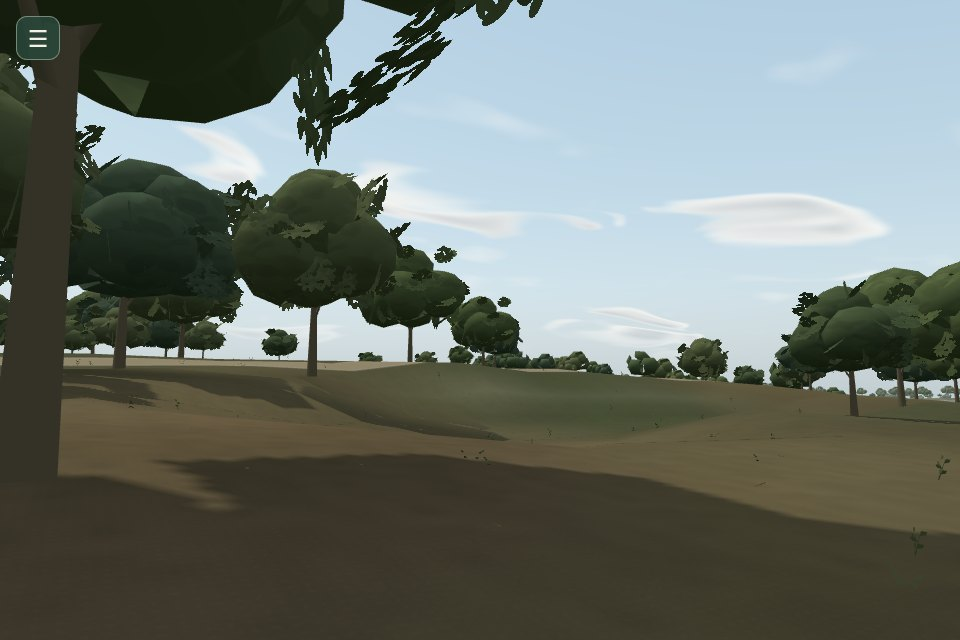
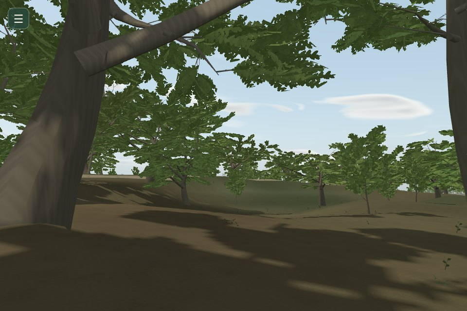
Avant · Mission 16Après · Mission 17BBois depuis le sol · les ancrages initiaux sont conservés.
La bibliothèque
Atelier synthétique Three.js, à échelle métrique, avec le promeneur existant. Les silhouettes sont des archétypes ; elles n’identifient aucune espèce ou arbre local. Le verger n’est pas distribué sans habitat documenté.
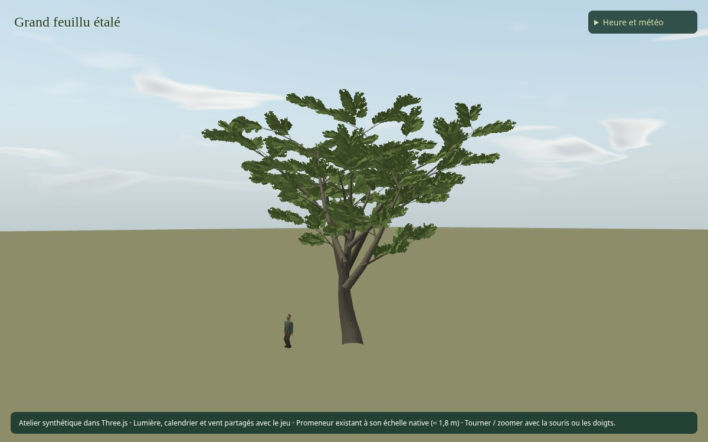
Grand feuillu étalé
11–19 m · 478 branches de référence
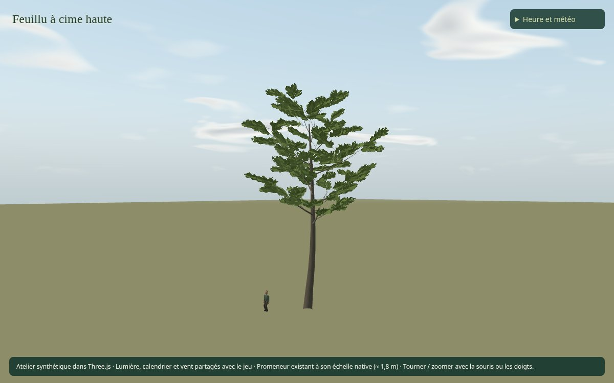
Feuillu à cime haute
16–24 m · 401 branches de référence
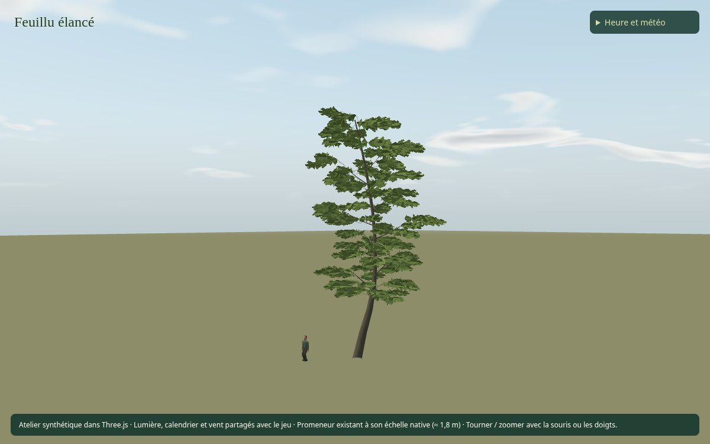
Feuillu élancé
12–22 m · 521 branches de référence
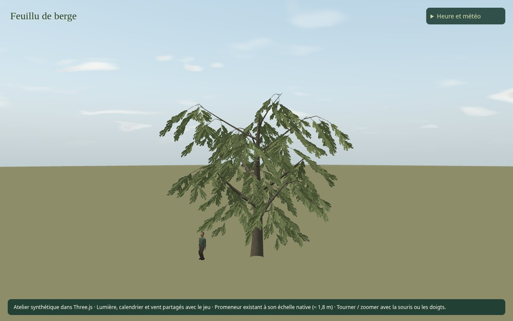
Feuillu de berge
8–17 m · 321 branches de référence
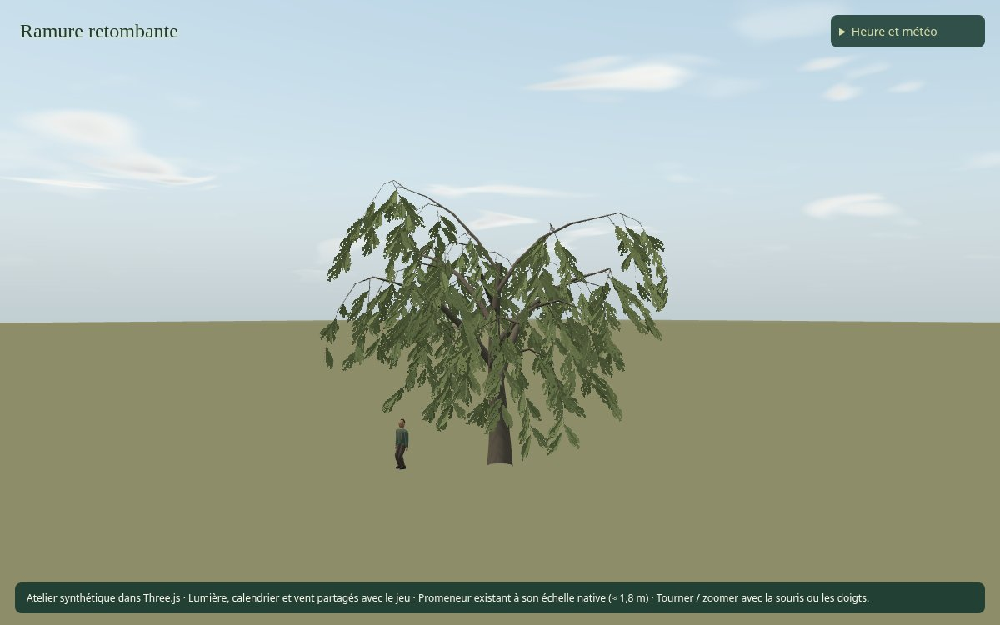
Ramure retombante
8–15 m · 281 branches de référence
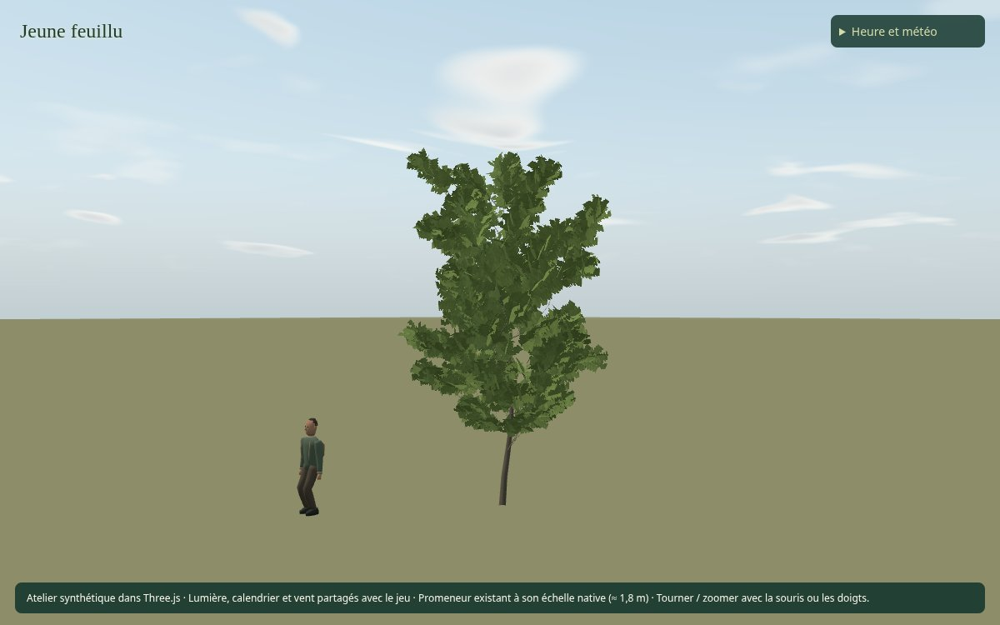
Jeune feuillu
2.7–6.5 m · 321 branches de référence
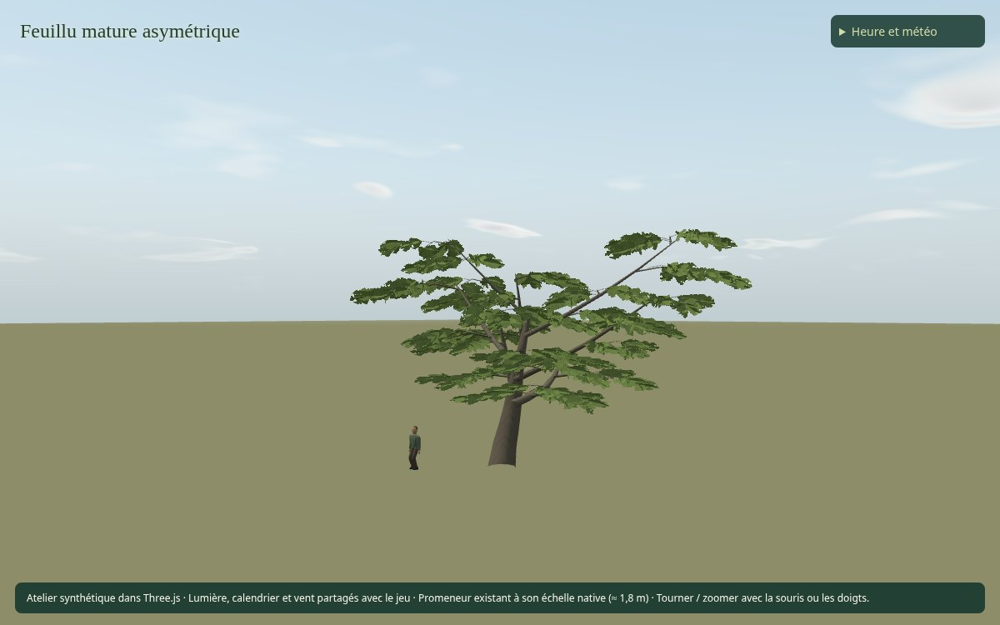
Feuillu mature asymétrique
10–20 m · 372 branches de référence
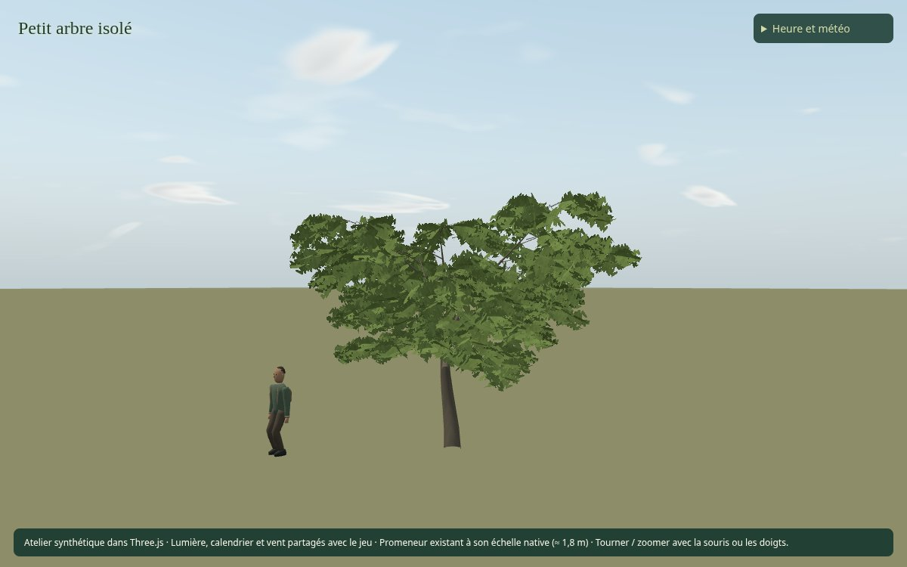
Petit arbre isolé
4–9 m · 372 branches de référence
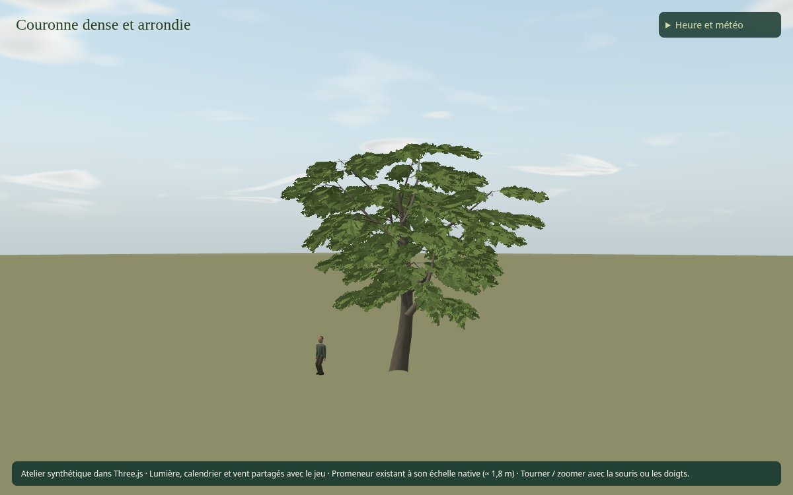
Couronne dense et arrondie
8–16 m · 716 branches de référence
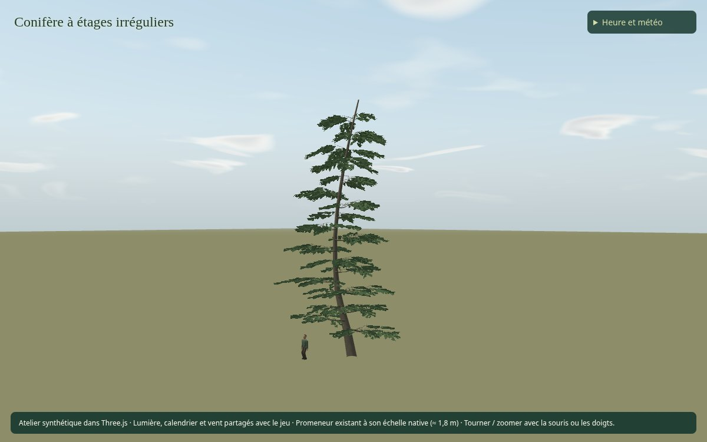
Conifère à étages irréguliers
8–23 m · 801 branches de référence
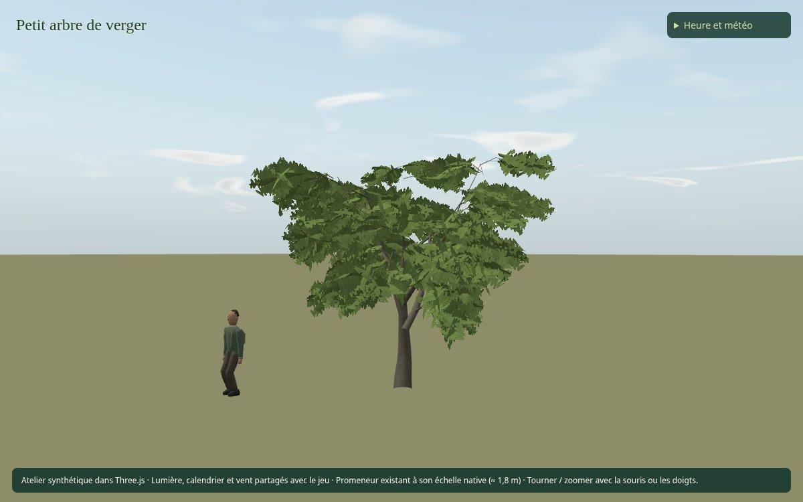
Petit arbre de verger
3.5–7.5 m · 319 branches de référence
Les onze à une échelle commune
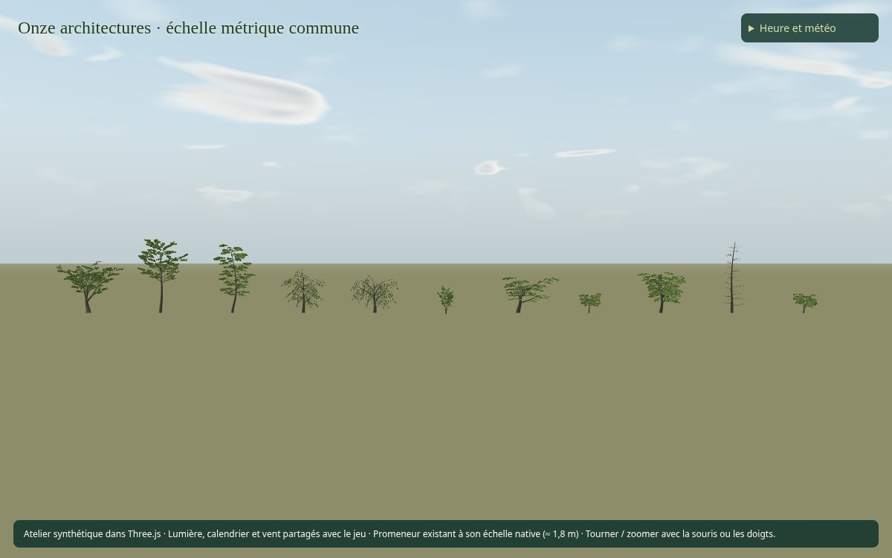
Densité et observation
Comparer l’agrandissement des couronnes seul au regarnissage localisé. La projection de bounds ignore les trouées du feuillage. Le MNH observe des hauteurs de pixels au printemps 2023 ; ces méthodes ne sont pas équivalentes.
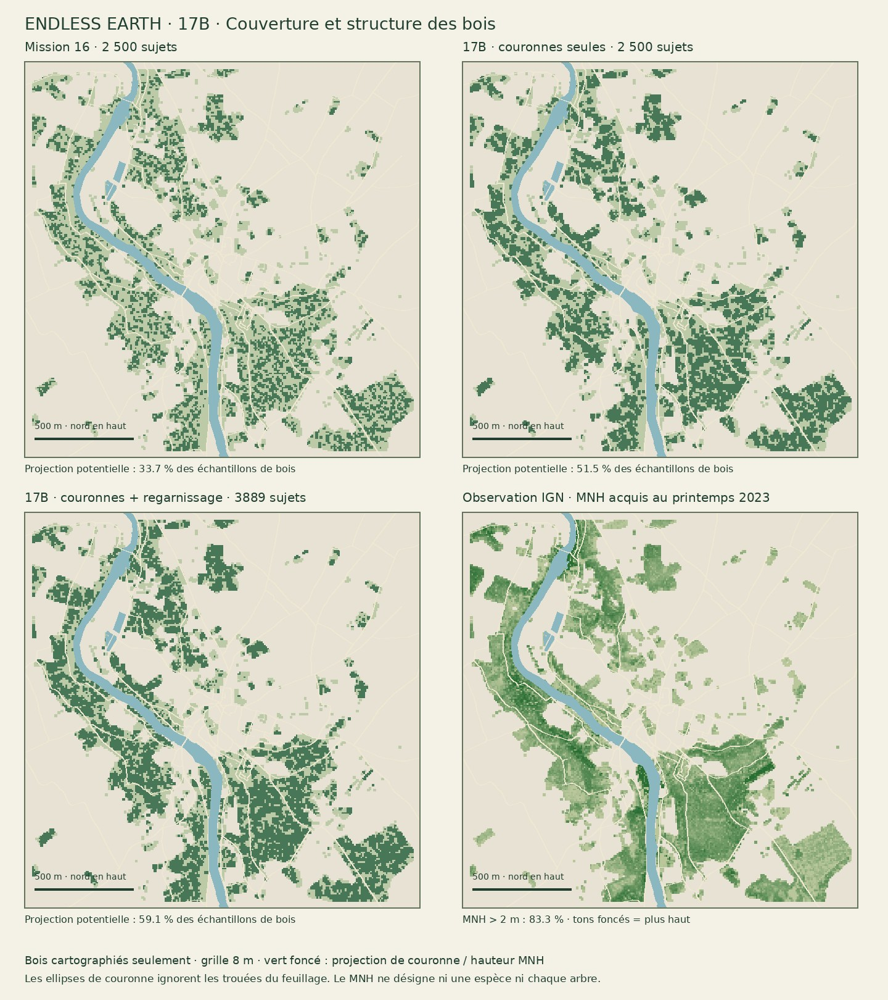
Méthode et comptages · Source IGN et limites · Préservation des données
Coût affiché à côté des images
La régression logicielle reste importante : +32 à +150 % sur les médianes de la campagne couleur. Ce pilote n’est pas prêt à être fusionné pour ses performances. La validation de fluidité et les optimisations de 17D restent nécessaires.
| Profil | Scène | M16 ms | 17B ms | Δ |
|---|
| eco | bois | 182.2 | 419.1 | +130.0 % |
| eco | aerienne | 240.6 | 364.7 | +51.6 % |
| eco | berge | 160.2 | 232.4 | +45.1 % |
| balanced | bois | 224.4 | 550.1 | +145.1 % |
| balanced | aerienne | 295.6 | 440.5 | +49.0 % |
| balanced | berge | 214.3 | 282.8 | +32.0 % |
| quality | bois | 239.9 | 600.9 | +150.5 % |
| quality | aerienne | 301.3 | 568.3 | +88.6 % |
| quality | berge | 201.6 | 341.0 | +69.1 % |
Chronométrage SwiftShader logiciel, 960 × 640, DPR 1. Aucun FPS de GPU ou Android physique. La campagne couleur désactive également les ombres locales des trois variantes ; la campagne distincte de lumière et les allocations sont dans les données.
Toutes les variantes, profils et allocations · Étude de simplification
Une marche courte, à vitesse native
Entrée clavier réelle, changement de profil pendant la marche et arrêt. Film silencieux. Ce contrôle d’intégration ne remplace pas la promenade prolongée de 17D.
Rechargement, fichiers absents/périmés, profils et ressources